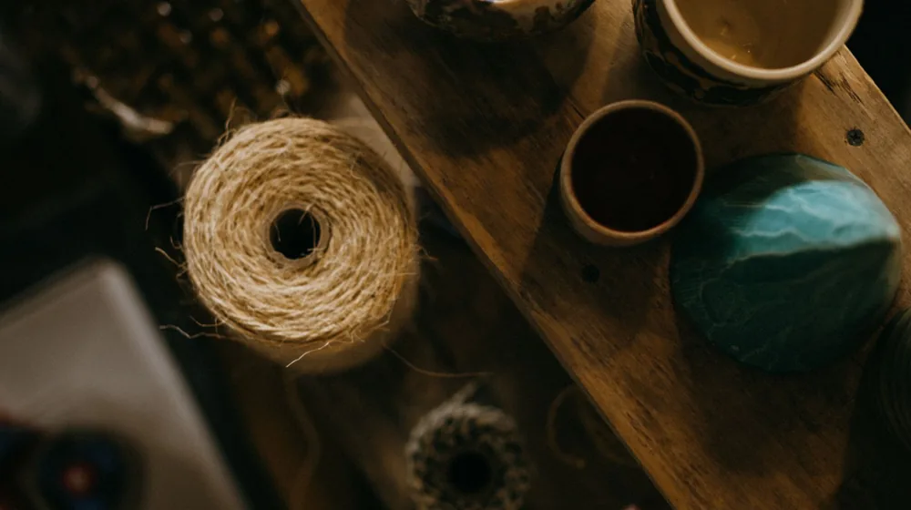

5만 원대로 시작하는 취향 수집, 신진 공예 작가 가성비 입문 브랜드 추천
사진: Iván Hernández-Cuevas / Pexels (무료 이미지, 출처 표기)
나만의 공간을 채우는 작은 사치, 왜 신진 공예 작가일까?

집에 머무는 시간이 늘어나면서 인테리어 소품이나 식기에 관심을 갖는 분들이 많아졌습니다. 대량 생산된 기성품에서는 느끼기 힘든 따뜻함과 독창성을 찾다 보면 자연스럽게 공예품에 눈길이 가게 됩니다. 하지만 유명 중견 작가의 작품은 수십만 원을 호가하여 선뜻 구매하기 부담스러운 것이 사실입니다.
이럴 때 좋은 대안이 바로 신진 공예 작가의 브랜드입니다. 신진 작가의 작품은 독창적인 실험 정신과 현대적인 감각을 담고 있으면서도, 아직 인지도가 아주 높지 않아 3만 원에서 7만 원 사이의 비교적 합리적인 가격대로 만나볼 수 있습니다. 나만의 취향을 담은 첫 번째 공예품을 실패 없이 고르는 방법과 가성비 좋은 루트를 정리해 드립니다.
실패 없는 공예 입문자를 위한 분야별 플랫폼 및 브랜드 비교
공예품은 도자, 유리, 목공, 금속 등 소재에 따라 그 매력이 완전히 다릅니다. 입문자가 접근하기 좋은 대표적인 유통 채널과 플랫폼을 표로 정리했습니다. 가격대와 특징을 비교해 보고 나에게 맞는 소재를 선택해 보세요.
한국공예·디자인문화진흥원(KCDF)에서 운영하는 공식 온·오프라인 숍은 철저한 심사를 거친 신진 작가들의 우수한 작품을 주로 소개해 입문자도 믿고 구매할 수 있습니다.
입문자가 자주 하는 실수! 구매 전 3가지 체크리스트
처음 수공예품을 구매할 때 기성품의 기준을 적용했다가 당황하는 경우가 많습니다. 수작업의 특성을 미리 이해하면 훨씬 만족스러운 소비를 할 수 있습니다.
- 유약의 흐름과 철점 이해하기: 도자기 표면의 미세한 검은 점(흙 속에 포함된 철분 성분이 구워지면서 나타나는 현상)이나 유약(도자기 표면에 입혀 물을 흡수하지 않게 만드는 유리질 점토)이 흐른 자국은 불량이 아닌 수공예 고유의 자연스러운 멋입니다.
- 실사용 가능 여부 확인: 식기로 사용할 목적이라면 전자레인지나 식기세척기 사용이 가능한지 반드시 확인해야 합니다. 특히 금박 장식이 들어간 도자기나 내열 유리가 아닌 일반 유리 공예품은 급격한 온도 변화에 깨질 수 있어 주의가 필요합니다.
- 상세 규격(사이즈와 무게) 실측: 모니터 화면으로 볼 때와 실제 손으로 쥐었을 때의 크기, 무게감이 다를 수 있습니다. 상세 페이지에 적힌 센티미터(cm) 단위를 집에 있는 기존 식기와 비교해 보는 과정이 필요합니다.
예산을 아끼며 신진 작가 작품을 만나는 현실적인 꿀팁
온라인 쇼핑몰 외에도 신진 작가의 작품을 가장 저렴하고 다양하게 만날 수 있는 오프라인 루트가 있습니다. 바로 매년 개최되는 대형 공예 박람회를 활용하는 것입니다.
가장 대표적인 행사는 매년 말 서울에서 열리는 '공예 트렌드 페어'입니다. 이곳의 '창작공방관'은 심사를 통해 선정된 신진 작가들이 자신의 작품을 대중에게 처음 선보이는 자리로, 중간 유통 마진 없이 작가에게 직접 합리적인 가격으로 작품을 구매할 수 있습니다. 또한 매년 5월경 전국적으로 열리는 '공예주간' 행사 기간에는 다양한 지역 공방에서 자체 할인 이벤트와 원데이 클래스를 진행하므로 이 시기를 활용하는 것을 추천합니다. 다만, 행사 일정 및 참여 작가 라인업은 매년 변동될 수 있으므로 방문 전 한국공예·디자인문화진흥원 공식 홈페이지를 통해 일정을 다시 한번 확인하시기 바랍니다.
초보 공예 소장가를 위한 오래 쓰는 관리법 FAQ
Q. 도자기 식기에 음식을 담을 때 주의할 점이 있나요?
A. 무광 매트 도자기의 경우 김치나 카레처럼 색이 강한 음식을 오래 담아두면 물이 들 수 있습니다. 사용 후 즉시 세척하는 것이 좋으며, 주방 세제 대신 쌀뜨물이나 베이킹소다를 활용해 세척하면 잔여 세제 흡수를 막을 수 있습니다.
Q. 나무(목공예) 식기는 어떻게 관리해야 오래 쓰나요?
A. 목공예품은 물에 오래 담가두면 나무가 뒤틀리거나 갈라질 수 있습니다. 세척 후 즉시 마른 천으로 물기를 닦아 통풍이 잘되는 그늘에서 건조해야 합니다. 한 달에 한 번 정도 식용 호두오일이나 포도씨유를 얇게 발라주면 고유의 광택을 오래 유지할 수 있습니다.
🔗 이 글도 함께 보면 좋아요: K-공예 원데이클래스, 실패 없이 고르고 예약하는 방법
관련 추천 상품
이 포스팅은 쿠팡 파트너스 활동의 일환으로, 이에 따른 일정액의 수수료를 제공받습니다.
자주 묻는 질문(FAQ) (탭하면 펼쳐져요)
Q1. 도자기 식기에 음식을 담을 때 주의할 점이 있나요?
A. 무광 매트 도자기의 경우 김치나 카레처럼 색이 강한 음식을 오래 담아두면 물이 들 수 있습니다. 사용 후 즉시 세척하는 것이 좋으며, 주방 세제 대신 쌀뜨물이나 베이킹소다를 활용해 세척하면 잔여 세제 흡수를 막을 수 있습니다.
Q2. 나무(목공예) 식기는 어떻게 관리해야 오래 쓰나요?
A. 목공예품은 물에 오래 담가두면 나무가 뒤틀리거나 갈라질 수 있습니다. 세척 후 즉시 마른 천으로 물기를 닦아 통풍이 잘되는 그늘에서 건조해야 합니다. 한 달에 한 번 정도 식용 호두오일이나 포도씨유를 얇게 발라주면 고유의 광택을 오래 유지할 수 있습니다.
한눈에 보는 상품 목록
수공예 도자기 머그컵 및 식기
매트한 질감과 자연스러운 흙빛이 매력적인 신진 작가들의 대표적인 도자 입문 아이템입니다.
유리 머들러 및 인센스 홀더
빛의 투과에 따라 다채로운 색감을 내어 인테리어 오브제로 활용하기 좋은 유리 공예품입니다.
원목 우드 트레이
찻잔이나 디저트를 정갈하게 받쳐주어 일상의 여유를 더해주는 목공예 입문용 소품입니다.